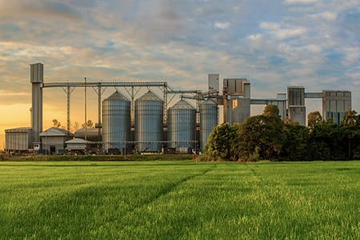

About Lionvert
Lionvert is a leading company specializing in agricultural solutions. Established with a mission to enhance farming practices, we offer a range of high-quality fertilizers and conduct innovative research to support sustainable agriculture. Our commitment is to provide farmers with the tools they need to succeed and thrive.
Our Mission
At Lionvert, our mission is to drive advancements in agriculture through cutting-edge research and premium products. We aim to promote sustainable farming practices and improve crop yields to support global food security. Our dedicated team works tirelessly to innovate and deliver solutions that meet the evolving needs of the agricultural community.
Meet Our Team

Our team consists of experts in various fields including agronomy, soil science, and chemical engineering. With years of experience and a passion for agriculture, our professionals are dedicated to advancing farming practices and delivering exceptional products. Learn more about our team and their contributions to the field.
Contact Us
If you have any questions or need more information, feel free to reach out to us. Our team is here to assist you with your agricultural needs and provide support for our products and services.
Get in Touch